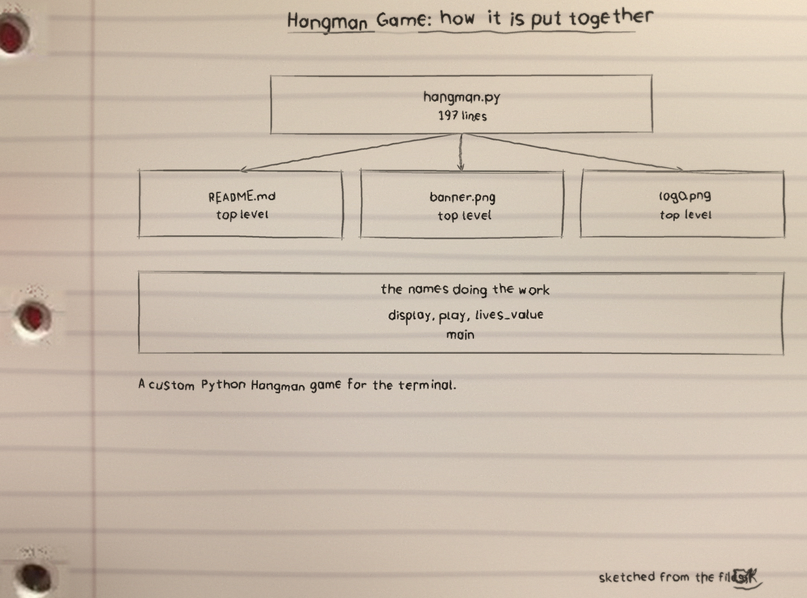
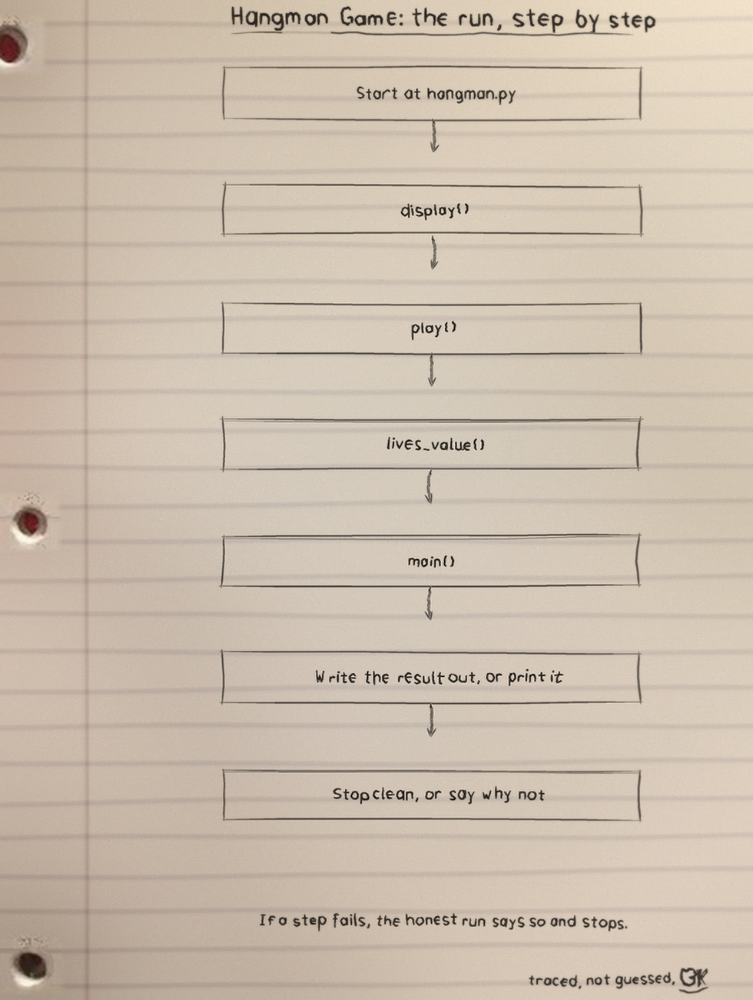
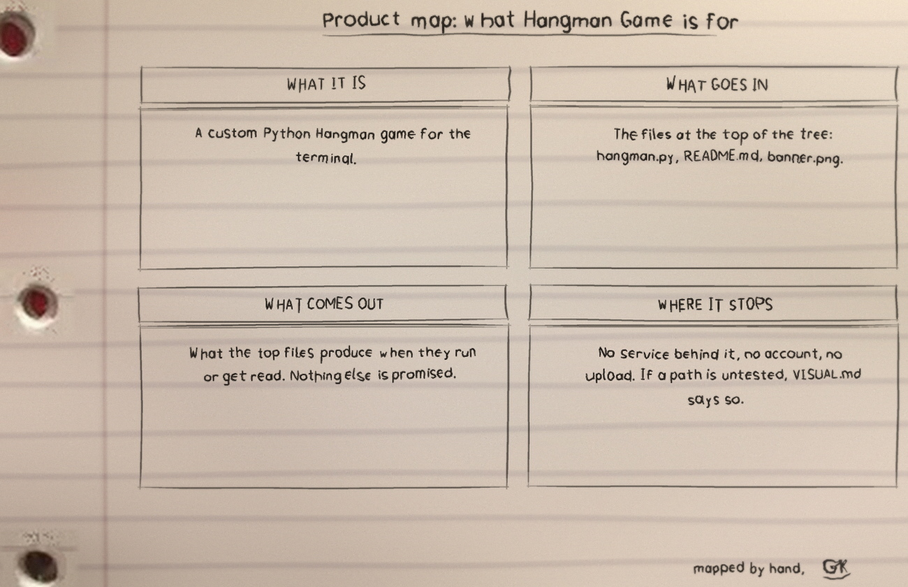

First course, how a round goes
The word shows as one underscore per letter. A correct letter appears everywhere it occurs. A wrong one costs a life and advances the gallows drawing through its seven stages, from empty frame to finished figure, the drawing scaled so even a two life game reaches the later stages.
Typing the whole word at the prompt wins outright if exact; a wrong whole word costs one life. Repeating any guess, letter or word, prints Already guessed. and costs nothing. Empty entries are ignored, and a digit, a stray multi letter entry or other non letter prints Please enter a single letter. and also costs nothing. Losing reveals the word.
python3 hangman.py # random word from the built-in list
python3 hangman.py --lives 4 # allow only 4 wrong guesses
python3 hangman.py --word secret # two-player: play with a specific wordSecond course, the settings on the table
The built in list holds 23 words, all computing vocabulary: python, hangman, keyboard, algorithm, encryption, mainframe, firewall and their companions in hangman.py.
| Setting | Rule | Exit |
|---|---|---|
--lives | 1 to 6, default 6, bad values rejected by argparse | 2 |
--word | Secret word for two players, lowercased before play; anything but letters is rejected | 1 |
| Completed session | After each round the running wins and losses print; answering y plays again, reusing the custom word or drawing a fresh random one; closing input mid game abandons the round uncounted | 0 |
Third course, proof the fire was tested
test_hangman.py carries 18 tests run with python3 -m unittest, driving play() and main() on scripted input: wins by letters and by whole word, a loss, free repeats, a one letter custom word, empty and non letter guesses, EOF mid game, and bad --word exit codes.
Functions doing the work: display, play, lives_value, main. Licence MIT.
The code, as it sits in the repo
From hangman.py, opening at line 38 with the display function:
def display(word, guessed):
# I test membership here instead of tracking positions. That is why one
# correct guess reveals a letter in every place it occurs, and why
# play() can keep right and wrong guesses in a single set.
return " ".join(ch if ch in guessed else "_" for ch in word)
def play(word, lives):
guessed, wrong = set(), 0
# I clamp lives to the number of drawings I actually have. main() already
# limits --lives to 1 through 6 through lives_value(), so this clamp only
# bites if someone imports play() and calls it directly with a bigger
# number. Without it a 10 life game would sit on the same drawing for
# several wrong guesses in a row, because the scale below has only seven
# drawings to spread those guesses over.
max_wrong = min(lives, len(STAGES) - 1)
print("Welcome to Hangman! Guess the word one letter at a time.")
while wrong < max_wrong:
# I scale wrong onto the full drawing range. With 6 lives this is
# just wrong itself. With 2 lives, one wrong guess already lands onThe files
Hangman-Game: 5 files and 252 lines, Python 197 and Markdown 55, hangman.py the largest.
The sheets
The full set is the Hangman-Game-Visuals tree in the repo.


